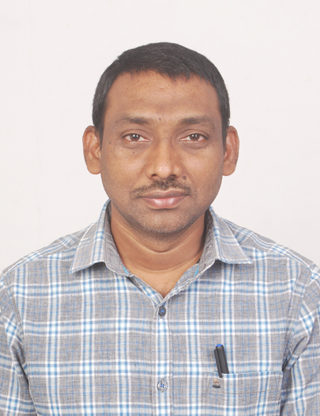
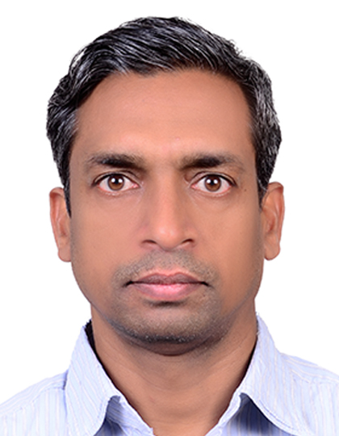

About
The Department of Mechanical Engineering is one of the oldest departments of the National Institute of Technology, Warangal (NITW). Established as one of the major departments of the Institute, since its inception in 1959, the Department of Mechanical Engineering has been actively engaged in teaching and research in diverse fields of Mechanical Engineering. With excellent faculty, the Department of Mechanical Engineering offers Under Graduate (B.Tech.) and Post Graduate (M.Tech) in Automobile Engineering, Computer Integrated Manufacturing, Additive Manufacturing, Machine Design, Manufacturing engineering, Materials and System Engineering Design & Thermal Engineering and research (Ph.D) programmes.
Courses
- B.Tech
- B. Tech. in Mechanical Engineering is the flagship programme of the Department. The graduate mechanical engineers apply scientific principles to the analysis, design and synthesis of various products and processes. The range of products include: automobiles, airplanes, electronics, surgical instruments, toys, building products, sports and recreational equipment etc. In all the cases, mechanical engineers design the products with the required functionality to high quality standards at the best possible price and in ways that are environmentally-friendly.
B. Tech. in Mechanical Engineering is existing from the inception of the Institute in the year 1959. This programme is of 4 years duration (8 semesters). The course work in the first two semesters is common to all branches of engineering. The core Mechanical Engineering courses are introduced from the 3rd semester onwards. Besides, elective courses are offered from 5thsemester onwards. The electives permit one to choose his/her area of interest within the broad areas. The laboratories are equipped with state of the art equipment to impart necessary hands-on practice. The students also carry out project work during the last two semesters based on the knowledge acquired.
- M.Tech (Computer Integrated Manufacturing)
- M.Tech (Machine Design)
- M.Tech (Materials And Systems Engineering Design)
- M.Tech (Additive Manufacturing)
- M.Tech (Automobile Engineering)
The department offers full time and part time Ph.D programmes in Mechanical Engineering.
The admission to Ph.D programme takes place in both odd and even semesters of an academic year.
The notification for the Ph.D admissions is advertised in the institute website as well as in leading national news papers.
The minimum qualification and other details for the aspiring students can be obtained from the advertisement .
Department faculty

Prof. K Venkata Reddy
Head of the Department
civil_hod@nitw.ac.in
9490165341

Prof. Ajey Kumar Patel
Associate Professor
08702468147
akpcivil@nitw.ac.in
Computational Fluid Dynamics (CFD); Environmental Fluid Mechanics;
Wastewater Engineering; Surface Aeration Systems